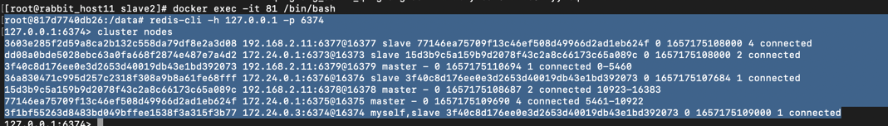

# redis cluster集群
redis cluster集群是由多个主从节点组成的分布式服务器群，它具有复制、高可用、分片的特点。 redis cluster不需要sentinel哨兵也能完成节点移除和故障转移。 需要将每个节点设置成集群模式，这种集群模式没有中心节点，可以水平扩展，官方称可以线性扩展到1000个节点。 redis cluster的性能优于redis sentinel模式。

redis官方的槽总数为：16384 ， redis-cluster所有的槽位总数需要等于16384，这里目的是实现数据的分区（set和get） 客户端发起 set hello world请求后，redis-cluster会使用 crc16(hello)做算法，并且对16384取模，获得槽位值，用来确定到具体哪个集群。
# Redis Cluster集群特点

- RedisCluster集群完全去中心化，采用多主多从，所有的redis节点彼此之间使用 ping-pong机制（进行数据交互机制）连接，内部使用二机制协议优化传输速度和带宽
- 只需要连接集群其中一个redis节点，不需要任何中间件
- 每一个分区都是由一个 Redis 主机和多个从机组成，分片和分片之间是相互平行的
- 每一个master节点负责维护一部分槽位，以及槽里映射对应的key数据，集群每个节点都有全量槽信息，通过槽每个node都知道具体数据存储到哪个节点上
# 配置
- 修改 nodes-6379.conf 配置文件
port 6379 # 修改端口
pidfile /var/run/redis_6379.pid # 改pid文件
# 普通 Redis 实例不能成为 Redis 集群的一部分；只有作为集群节点启动的节点才可以。要将 Redis 实例作为集群节点启动，请启用集群支持，取消注释以下内容：
cluster-enabled yes # 开启集群
# 每个集群节点都有一个集群配置文件。此文件不适合手动编辑。它由 Redis 节点创建和更新。每个 Redis Cluster 节点都需要不同的集群配置文件。确保在同一系统中运行的实例没有重叠的集群配置文件名。
cluster-config-file nodes-6379.conf
# 集群节点超时
cluster-node-timeout 15000
2
3
4
5
6
7
8
使用docker-compose 部署 redis-cluster : docker-compose -f redis-clsuter.yml up -d
查看启动的redis进程： ps -ef|grep redis ，此时redis-cluster只是以cluster集群方式启动，目前还没有形成集群主从关系

cluster meet ip port : cluster forget 集群id cluster meet 192.168.2.9 6376


- redis-cli --cluster help
- 构建集群关系
redis-cli --cluster create 192.168.2.11:6379 192.168.2.11:6378 192.168.2.11:6377 192.168.2.9:6375 192.168.2.9:6376 192.168.2.9:6373 192.168.2.9:6374 --cluster-replicas 1
redis cluster的槽位是根据节点数平均分配的，只需要配置主从节点比，一般写1就可以
2

- cluster nodes  发现 master 节点有自动分配的槽位 1 connected 0-5460 2 connected 10923-16383 4 connected 5461-10922
{kind=link}
比如命令
127.0.0.1:6379> set kee a 123
(error) MOVED 9030 192.168.2.9:6375
2
因为 kee 通过crc16算法算出来的值不在 6379 槽位值中，所以报错提示 MOVED ....
可以使用 redis-cli h 127.0.0.1 -p 6379 -c : 以集群方式进入命令端，再执行

- 扩容，加入集群 add-node
add-node new_host:new_port existing_host:existing_port # 是原集群的任意一个节点
--cluster-slave # 以从节点的角色加入集群，若没有设置，则以主节点方式加入
--cluster-master-id <arg> # 以从节点角色加入方式，需要被加入主节点的id
2
3
4
主节点角色加入： redis-cli --cluster add-node 192.168.2.9:1000 191.168.2.11:6379


配置槽： 主节点角色加入需要配置槽位，参考 reshard命令
从节点角色加入： redis-cli --cluster add-node 192.168.2.9:2000 191.168.2.11:6379 --cluster-slave --cluster-master-id 主节点id


- 分配槽位 reshard
reshard host:port
--cluster-from <arg>
--cluster-to <arg>
--cluster-slots <arg>
--cluster-yes
--cluster-timeout <arg>
--cluster-pipeline <arg>
--cluster-replace
2
3
4
5
6
7
8
redis-cli --cluster reshard 192.168.2.11:1000 会重新进入create界面，对这个新主节点重新分配槽位的界面


- 缩容 主节点：需要把槽位去除， redis-cli --cluster reshard --cluster-from 被缩容的节点ip:port --cluster-to 迁到的主节点ip:port --cluster-slots 1000(缩的槽位数量)
-剔除节点 : 建议先删除从节点，再删除主节点 redis-cli --cluster del-node 192.168.2.11:1000 节点ID
root@0a2197c5c17d:/data# redis-cli --cluster help
Cluster Manager Commands:
create host1:port1 ... hostN:portN
--cluster-replicas <arg> # 分配主从的规则，如果arg是1，则主从节点是 1：1
check host:port
--cluster-search-multiple-owners
info host:port
fix host:port
--cluster-search-multiple-owners
--cluster-fix-with-unreachable-masters
reshard host:port
--cluster-from <arg>
--cluster-to <arg>
--cluster-slots <arg>
--cluster-yes
--cluster-timeout <arg>
--cluster-pipeline <arg>
--cluster-replace
rebalance host:port
--cluster-weight <node1=w1...nodeN=wN>
--cluster-use-empty-masters
--cluster-timeout <arg>
--cluster-simulate
--cluster-pipeline <arg>
--cluster-threshold <arg>
--cluster-replace
add-node new_host:new_port existing_host:existing_port
--cluster-slave
--cluster-master-id <arg>
del-node host:port node_id
call host:port command arg arg .. arg
--cluster-only-masters
--cluster-only-replicas
set-timeout host:port milliseconds
import host:port
--cluster-from <arg>
--cluster-from-user <arg>
--cluster-from-pass <arg>
--cluster-from-askpass
--cluster-copy
--cluster-replace
backup host:port backup_directory
help
2
3
4
5
6
7
8
9
10
11
12
13
14
15
16
17
18
19
20
21
22
23
24
25
26
27
28
29
30
31
32
33
34
35
36
37
38
39
40
41
42
43
44
45
- redis集群启动命令
redis-cli --cluster create 192.168.2.11:6379 192.168.2.11:6378 192.168.2.11:6377 192.168.2.9:6375 192.168.2.9:6376 192.168.2.9:6373 192.168.2.9:6374 --cluster-replicas 1
- redis节点个数 redis集群至少需要有3个节点，因为投票的容错机制要求超过半数节点都认为这个节点挂掉才会被认可挂掉 ！所以2个节点是无法构成集群的 要保证高可用的，需要每个节点都有从节点，所以redis集群最少需要有6个节点。

- 问题 ： 在创建redis集群后，会一直停留在 ： Waiting for the cluster to join ........ 的状态
Redis集群TCP端口，每个Redis集群节点都要打开两个TCP端口，一个是给客户端用的端口（比如 6379），一个是用于集群总线即是使用二进制协议的节点到节点通信的通道（比如 16379），第二个端口在第一个普通端口之上 +10000